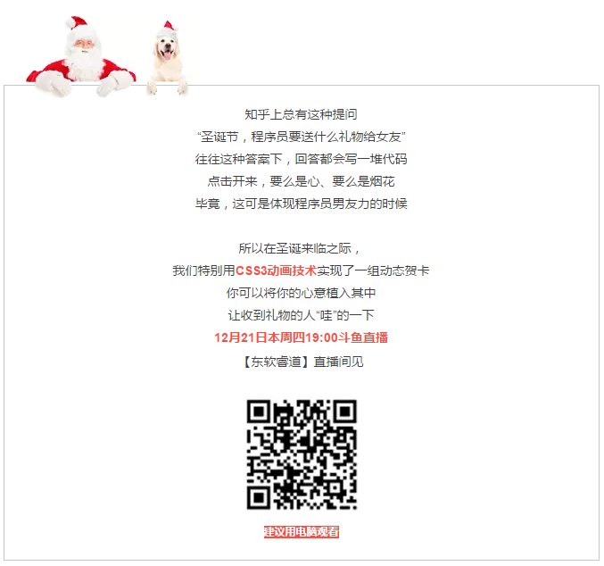
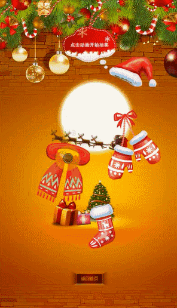
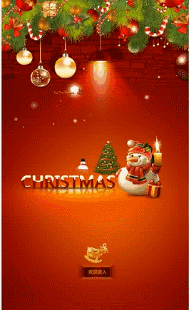
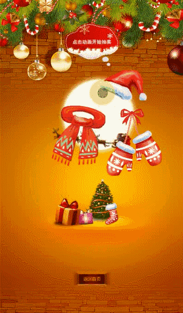
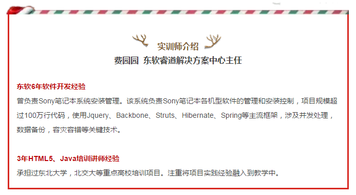
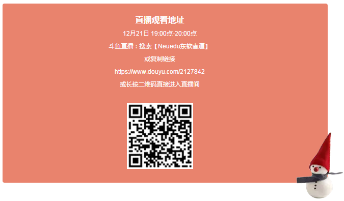

直播课堂 | 迅速提升CSS3动画技术，教你制作程序员专属圣诞贺卡
2017-12-19

在圣诞贺卡项目中，我们可以掌握HTML的基本概念，CSS样式、布局、2D转换，动画，以及JavaScript的基本概念；可以深入理解行级元素和块级元素，盒子模型，定位等重要知识点；可以学习到水平居中，垂直居中，背景图适配容器大小的小技巧。

在编写第一页面时，我们使用了行级元素和块级元素的转换，使用了盒子模型来控制元素和元素的间距，使用了CSS 2D旋转和动画来实现旋转的小鹿。

在编写第二个页面时，我们使用到了定位来控制图片在页面上的位置，使用到了动画来实现图片的移动，旋转和放大缩小。

以上充满技术含量的圣诞贺卡你心动了吗
通过实战演练，hold住技术要点
如果你有任何关于IT技术问题想要咨询
请添加东软睿道官方QQ群：607021413
我们一众技术大咖都在里面哦~

